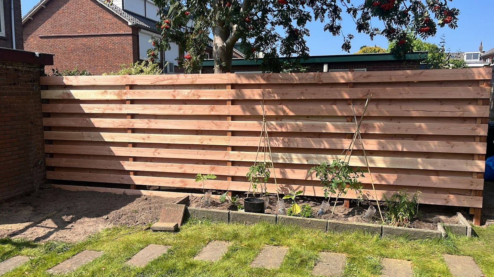
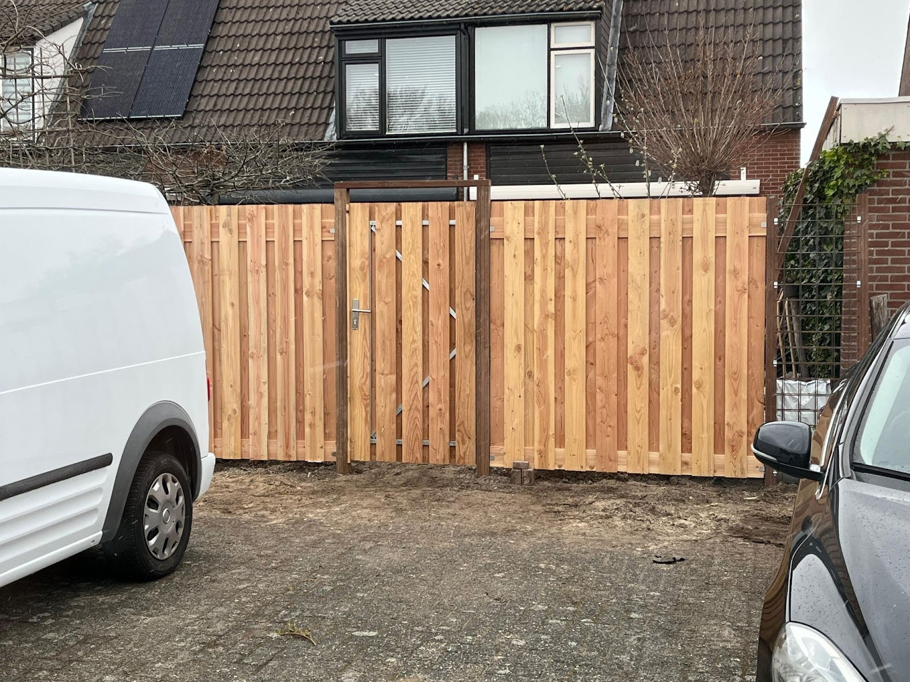

Aanleg
Laat uw tuin aanleggen door een professioneel team dat kwaliteit en duurzaamheid vooropstelt.
Bij ons begint de aanleg van uw tuin met een persoonlijke benadering.
Van grondwerk tot beplanting en van bestrating tot schuttingen,
wij nemen elke stap met u door.
In veel gevallen kunt u een groot gedeelte van uw tuin renoveren en hergebruiken,
zodat u weer kunt genieten van een mooie tuin.
Voorbeelden
Bekijk enkele projecten die wij hebben gerealiseerd. Iets anders in gedachte? Neem dan contact op.

